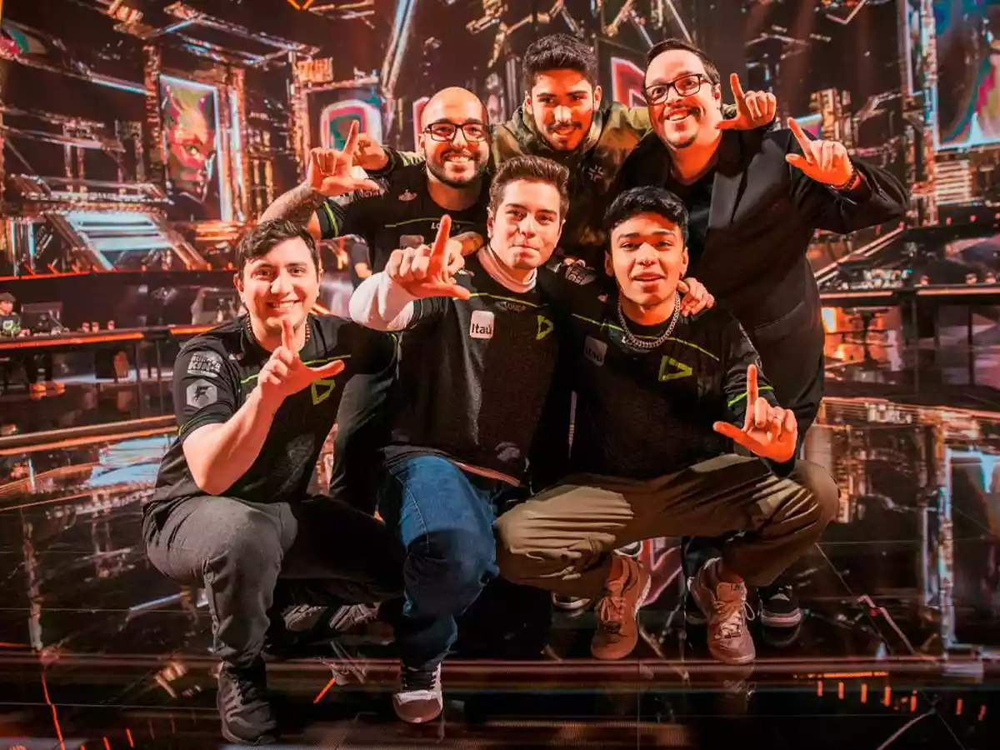
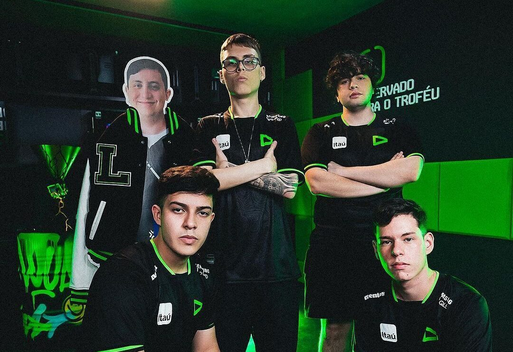
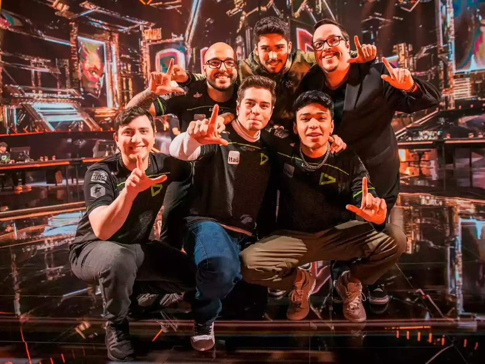
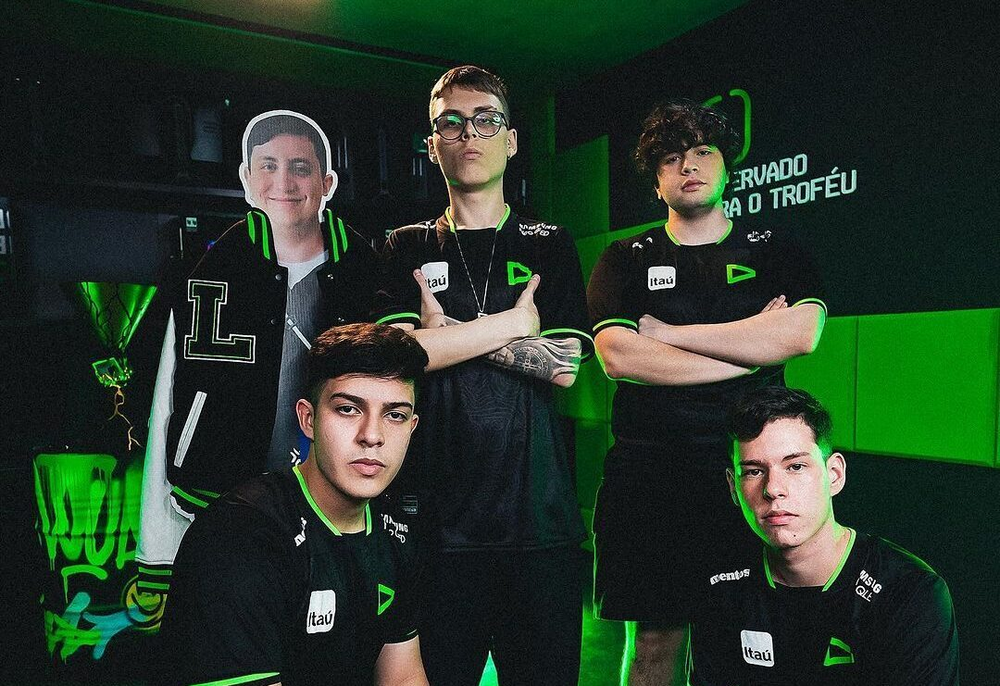

Loud (estilizado como LOUD) é uma organização brasileira de esportes eletrônicos com equipes que competindo em Free Fire, League of Legends e Valorant. Fundada em 2019, a Loud é a organização de esportes eletrônicos com maior número de seguidores nas redes sociais do Brasil e a segunda maior do mundo.
A arena LOUD é um espaço de eSports localizado em São Paulo, Brasil.
É a casa da LOUD, uma organização brasileira de eSports conhecida
por suas equipes competitivas em jogos como Free Fire, Fortnite e
League of Legends.
A arena LOUD é mais do que apenas um local para competições de
eSports. É um espaço multifuncional que inclui áreas para
treinamento de equipes, produção de conteúdo, transmissões ao vivo e
eventos. A instalação é equipada com tecnologia de ponta para
suportar as necessidades de treinamento e competição das equipes da
LOUD.
Além disso, a Arena LOUD é conhecida por seu design moderno e
instalações confortáveis. Ela foi projetada para ser um espaço onde
os jogadores podem se sentir em casa enquanto treinam e competem.
EQUIPE VALORANT
A LOUD é uma organização brasileira de esports fundada em 2020. A equipe de Valorant foi criada em agosto de 2021, com a contratação de Erick "aspas" Santos, Felipe "Less" Lessa, Gustavo "Sacy" Rossi, Matias "saadhak" Delipetro e Gustavo "Maicon" Maicon.
Equipe de Valorant da LOUD em 2021
O time rapidamente se tornou um dos principais do Brasil, vencendo o VCT Challengers Brasil Stage 2 - Finals em outubro de 2021. Com a vitória, a LOUD se classificou para o VALORANT Champions, o campeonato mundial do jogo.
No VALORANT Champions, a LOUD chegou às semifinais, onde foi derrotada pela Sentinels, equipe americana que acabaria campeã. Apesar da derrota, a performance da LOUD foi considerada surpreendente, e o time se tornou um dos favoritos para as próximas competições.
Em 2022, a LOUD continuou a dominar o cenário brasileiro. O time venceu o VCT Challengers Brasil Stage 1 - Finals, o VCT Challengers Brasil Stage 2 - Finals e o VCT Masters Reykjavík. Com as vitórias, a LOUD se classificou para o VALORANT Champions 2022.
Equipe de Valorant da LOUD em 2022
No VALORANT Champions 2022, a LOUD fez história ao se tornar a primeira equipe brasileira a conquistar o título. O time venceu a G2 Esports na grande final, em uma série de 3 a 1.
Após a conquista do título mundial, a LOUD continuou a investir no time de Valorant. Em novembro de 2022, o time contratou os jogadores cauanzin e tuyz, que haviam sido campeões do VALORANT Masters Copenhagen 2022 pela Vivo Keyd.
Equipe de Valorant da LOUD em 2023
Com os novos reforços, a LOUD chega ao VCT Américas 2023 como uma das favoritas ao título.
O desenvolvimento da LOUD no Valorant pode ser dividido em três fases:
Fase 1 (2021) :
Na primeira fase, o time foi formado por jogadores experientes no cenário brasileiro, como Erick "aspas" Santos e Matias "saadhak" Delipetro. O time rapidamente se adaptou ao jogo e começou a conquistar bons resultados.
Fase 2 (2022) :
Na segunda fase, o time contratou o jogador Gustavo "Maicon" Maicon, que trouxe um novo estilo de jogo para a equipe. O time continuou a dominar o cenário brasileiro e chegou às semifinais do VALORANT Champions.
Fase 3 (2023) :
Na terceira fase, o time contratou os jogadores cauanzin e tuyz, que são considerados dois dos melhores jogadores do mundo. Os novos reforços deram ao time mais versatilidade e poder de fogo. E com muito treino e determinação conquistaram o um dos titulos mais importantes do cenario de VALORANT, o titulo de campeão do VCT AMERICAS
O desenvolvimento do time da LOUD no Valorant é um exemplo de como um time pode alcançar grandes resultados com investimento e planejamento. O time é uma das principais forças do cenário mundial e está pronto para continuar a conquistar títulos.
Além dos resultados esportivos, a LOUD também se destaca pela sua forte presença nas redes sociais. O time tem mais de 10 milhões de seguidores no Twitter, Facebook e Instagram, e é uma das organizações de esports mais populares do mundo.
E esses são alguns momentos mais importantes dessa trajetória incrivel da LOUD.
 


